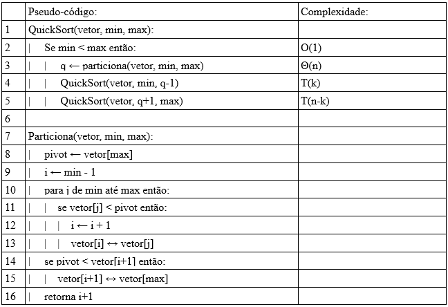

Introdução:
O quicksort é um algoritmo de ordenação que possui como base a estratégia de divisão e conquista, dividindo o problema de ordenação em sub-problemas menores e resolvendo-os recursivamente.
Funcionamento teórico:
Para iniciarmos o quicksort, devemos definir um valor dentro de nosso vetor que receberá o papel de pivot, ou seja, será um valor base que utilizaremos para dividir nosso problema de ordenação em um ou dois problemas menores.
Uma boa escolha do pivot é essencial, pois pode alterar completamente a velocidade do algoritmo, mas isso será abordado a frente, neste momento, o pivot será sempre o último valor do vetor a ser ordenado.
Para o próximo passo, vamos admitir duas váriaveis auxiliares, min, que deverá ser posicionado no inicio do vetor analisado e max, que deverá ser posicionado no final.
Agora, vamos varrer o vetor e fazer com que todos os valores maiores que o pivot fiquem a direita de max e todos os valores menores ou iguais ao pivot, fiquem a esquerda de min.
Quando min e max se cruzarem, trocamos esta posição com o pivot, gerando um novo vetor como o a seguir:
Por fim, com os dados separados, basta chamarmos o processo do quicksort recursivamente nos vetores gerados a direita e a esquerda do pivot.
Análise em árvore:
Analisando o algoritmo temos que T(n) é a soma das linhas 3, 4 e 5, ou seja:
T(n) = Θ(n) + T(k) + T(n-k)
1. Pior caso:
Quando o pivot não divide o vetor, retirando apenas 1 elemento (o pivot) → k=1, deixando todo o peso da arvore para um dos lados.
Ou seja, T(n) = Θ(n) + T(1) + T(n-1) → T(n) = Θ(n) + T(n-1), como representado na árvore a seguir:
Portanto concluimos que para o pior caso a ordem do quick sort é (n^2+n)/2, ou seja, O(n^2)
2. Melhor caso:
Quando o pivot divide igualmente os valores, tendo x valores a sua esquerda e no maximo x+1 valores a sua direita (ou o contrário), por tanto k = n/2.
Ou seja, T(n) = Θ(n) + T(n/2) + T(n/2) → T(n) = Θ(n) + 2.T(n/2), como representado na árvore a seguir:
Observações:
Podemos perceber o como a escolha de um bom pivot impacta muito este algoritmo, pois decide se cairemos no melhor ou no pior caso, e portanto se a complexidade será O(n^2) ou O(n.log(n)).
